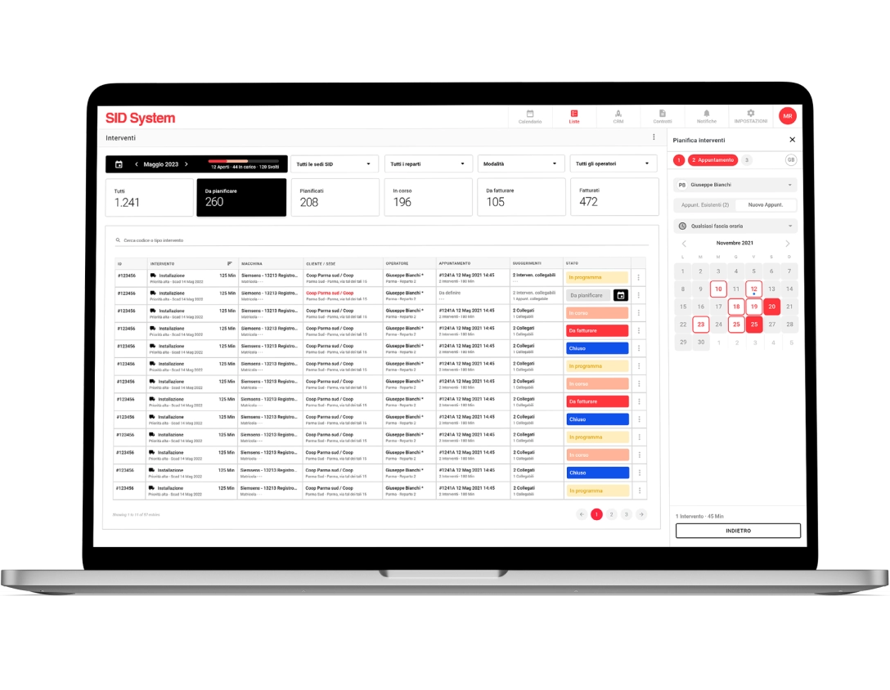
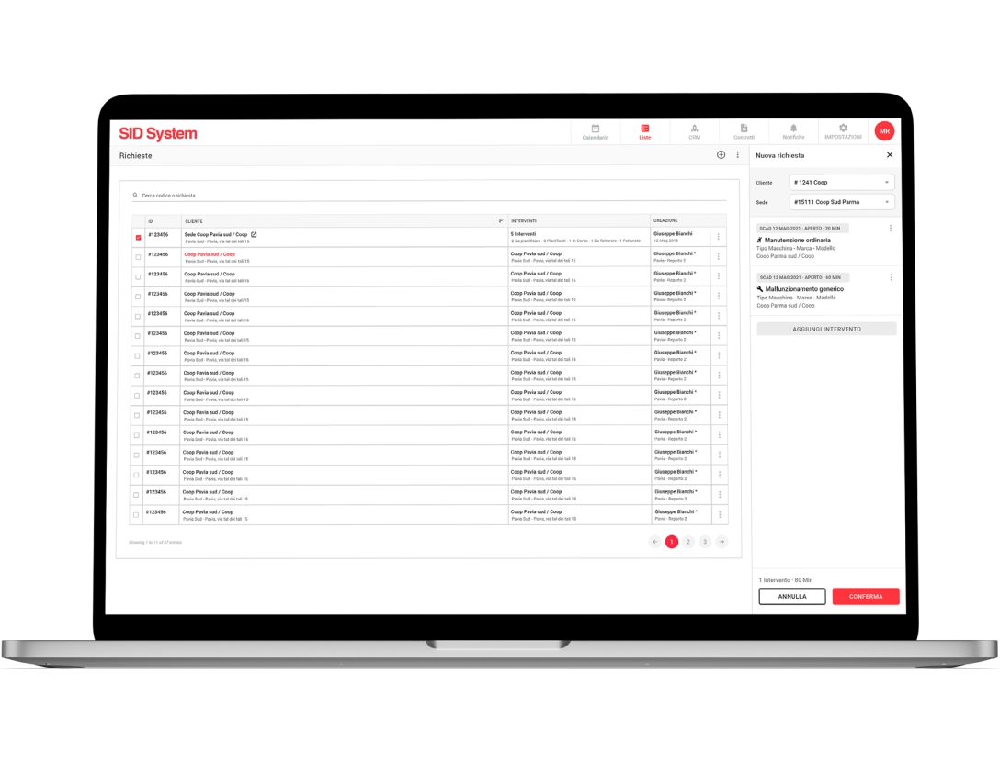
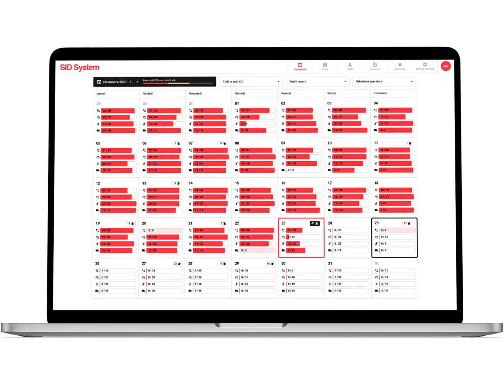
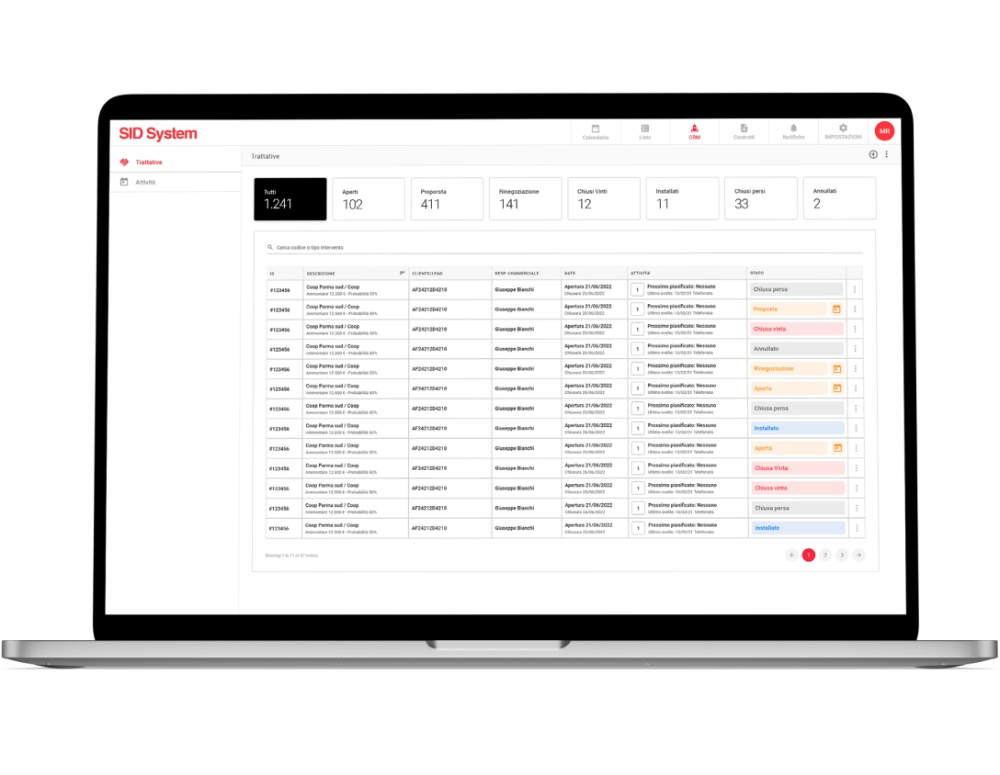

Realization period
Oct 2021 - Aug 2022
Clients
SID Parma, SNG Sinergia Group
Design toolkit
Adobe XD, Adobe Illustrator, Adobe Photoshop, Balsamiq, User interview
Oct 2021 - Aug 2022
SID Parma, SNG Sinergia Group
Adobe XD, Adobe Illustrator, Adobe Photoshop, Balsamiq, User interview
SID Maintenance System is a Web and Mobile cloud solution integrated with other company software (ERP and Customer care) for managing the assistance and maintenance service. The system allows you to assign and plan activities in order to make travel and resources as efficient as possible. In this case study, the web app version, with which it is possible to organize maintenance requests, will be explored in depth.
With a very broad offering involving the supply of technological solutions for large-scale retail stores such as: cash registers, scales, anti-shoplifting devices, electronic labelling, etc., SID Parma needed complete and reliable software that would respond to the demand "How can we optimize the planning, carrying out and reporting of maintenance interventions on a large quantity of different types of machines spread across the national territory?". Finding a solution to this problem is what we focused on during this project.
During this project I took on the role of both a UX designer, in which I studied user flows, interactions and new innovative components together with my fellow designers and analysts, and as a UI designer in which I dealt with the visual design of the personal data sheets, management functions and also the mobile app dedicated to technicians.
1x Project Manager
1x R&D Manager
2x UX/UI Designer
1x Software Analyst
2x Back-end Developer
2x Front-end Developer
SID System had to respond, with its objectives to which we were working, to different types of end users with different needs including: salespeople, department managers, operators and customers.
find a solution for creating a support request and managing it
create a user flow that well links requests for assistance and planning of interventions
think about intuitive and rapid navigation for the CRM and contract management parts
create an effective design system that can also be easily applied to the mobile app
After the first meetings with the stakeholders we analyzed their ideas and all the data they provided us, this gave us the opportunity to start with the research phase.
We started by trying to get to know, and consequently empathize, with the end users. It was a long process, given the great variety of users, but essential to hit the agreed KPIs and understand how to direct competitors' research.
The user research phase for B2Bs is never easy, so the first thing we did was interview the stakeholders. Once we learned their point of view, we began the difficult phase of recruiting actional users to empathize with them, build personas and collect data and feedback.
SID helped us in building our user panel by putting us contact with their Customer Success Team and those of their clients, who managed to identify with us around 20 salespeople and department managers and technicians (between those of SID and those of the customers) who participated in the research phase through interviews, surveys and usability tests.
Many technicians and salespeople have expressed a certain difficulty with many software in planning machinery maintenance interventions, especially because it often happens that these overlap and make it difficult not only to book them but also to manage them.
Result: the software had to avoid overlaps and waste of time, suggesting, with a new functionality, other interventions that can be connected to the one already scheduled and can be aggregated into a single appointment (events that happen not infrequently), taking into account the same customer location, the same service department and expiration times.
During the interviews it was made known to us by the department managers that even the creation of requests for assistance is not free from overlapping problems which risk creating confusion and the lack of integration of some interventions.
Result: the system had to allow the request to be compiled as a list of interventions, each relating to a machine model or a well-identified machine. By doing so it would have been possible to centralize all the information certifying the assistance activity on the individual machine in order to create historical archives that are easy to access and consult.
A sore point of these types of software is navigation, which becomes complex and dispersive when you have to move between the operational part and that which concerns the consultation and management of customer profiles, contracts, negotiations, the progress of a supply, etc.
Result: to allow salespeople to move within the SID System in a simple and smooth way, it was necessary to provide a method that was already well tested, i.e. a top navigation bar hosting the main commands, flanked by a navigation drawer containing the secondary pages connected to the main page selected. By doing so, we leave the right space for tables and calendars but without sacrificing the software exploration process.
The interviews and in general the entire first part of user research helped us to understand that a key, and at the same time critical, functionality for users was the planning of interventions, and in fact it was the aspect on which we focused most in order to improve the timing and success rate of the tasks connected to this part of the software.
The collection of data from the participants of our user panel, as well as the entire analysis part that followed, allowed us to arrive at the brainstorming phase well prepared and from which the ideas for the project emerged. From the sketches generated I began the creation of the actual design, working mainly on the calendar, requests for assistance and the CRM section.
This phase was accompanied by meetings with stakeholders and developers, as well as with some testers (especially when we had some doubts about some features), which led to the delivery of the Adobe XD file, after its validation, to start the code part.
More or less halfway through the process of creating the drawings, we proposed to our testers the verification of some features and components, not present on competitor software, to understand if they were understandable, intuitive and satisfactory. This would have told us whether our intuitions were right or wrong.
For intervention planning we thought of dedicating an entire page supported by a wizard, but 72% of users were not enthusiastic about this idea, because they did not want to lose sight of the intervention table during this process.
Therefore we have inserted this functionality in a small side panel to always have everything under control, also obtaining better optimization of space and navigation.
The daily calendar initially involved the use of special cards, containing 2 or more appointments, to show overlapping meetings. However, this solution was rejected during usability tests and we opted for something different.
In the case of 2 or more appointments with a partially coinciding time, we decided to slightly overlap the appointment cards, already designed previously, to make all the information visible and warn the user that the meetings are overlapping.
The mid-project usability testing was followed by adjustments and the completion of the mid-fidelity prototypes which we connected and delivered to developers and stakeholders to get their feedback.
For the SID System UI we stuck to the client's brand colors and the framework we usually used, containing tables and filters that we used extensively in the project (and partly customized and optimized for some pages), but when necessary we introduced new components such as the side panel to be able to plan interventions with the help of a 3-step wizard.

Another important section of the software, such as that for managing assistance requests, also presents tables and filters but less rich and elaborate, as does the panel for creating a new request, however the logic is the same as that used in the pages of interventions. The table is a fundamental and recurring theme in almost all the SID System pages.

Together with the tables and creation side panels, another important component is the calendar which takes into account the interventions carried out and those still to be carried out. Viewing can be monthly or daily.
In the monthly one, in addition to the commands to navigate between the months and filter the results by offices, departments and operators, the days are divided into 4 progress bars which indicate how many appointments are to be carried out (or have been carried out) on site, by telephone and remote assistance or if there are installations to be carried out. All this to make data easily accessible and readable to users with just the use of a few icons and elements.

In this section, as in many others of SID, there are tables and a double navigation menu. It’s interesting to note in the tables the presence of large preset filters and of labels which with their colours, analyzed in their meaning and subsequently included in the design system, mainly indicate a specific type of status, while the double menu creates a connection between the main item selected in the top navigation bar and the submenu that appears in the navigation drawer.
In this way the user is not redirected to another page, remains concentrated on the action he was carrying out and his work area does not lose precious space.

With SID System's clear intent to provide a service for managing after-sales support and maintenance in mind, I established the metrics to test the success of the software. The results showed us a good reception both by SID Parma employees and by customers who use it to check the assistance and interventions that concern them. On the contrary, they told us that for the mobile app we needed to optimize some features in order to offer a better tool to technicians.
SID System was, from my point of view, a complete project because I was able to work on the UX and UI of a B2B which presents sometimes complex logics that allowed me to grow in my work. After delivering the design files to the developers and creating a beta version, we did a field study observing senior user research participants doing their work with the new software.
This allowed us to identify other small things to correct and proceed with the creation of the definitive version of SID System which, in addition to being used by SID Parma employees, is finding more and more users among SNG customers.